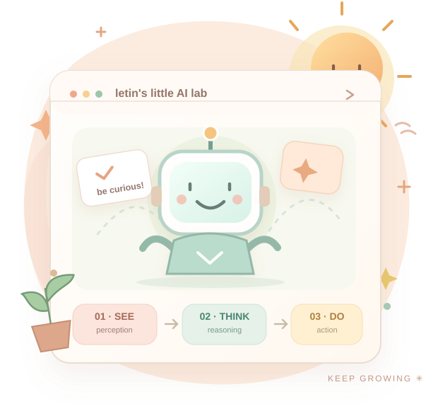

01 / PERCEPTION✽
MULTIMODAL INTELLIGENCE让视觉与语言
让视觉与语言
靠得更近一点
探索视觉语言对齐与跨模态表示，研究 AI 如何把“看见”慢慢变成“理解”。
HELLO, WORLD! 我是 Letin
你好呀！我是一名计算机专业学生，喜欢研究多模态大模型与智能体 Agent。在代码、论文和日常生活之间，认真探索那些值得被创造的可能性。

Nice to meet you!
我对 AI 的好奇，不止于模型能生成什么答案，更在意它如何看懂世界、理解意图，并尝试自己解决问题。
最近在学习视觉语言对齐、模型微调、RAG 和多智能体协作。会为跑通一个小实验而开心，也会因为发现一个新问题而兴奋。
慢慢来，认真做。保持善意，也保持好奇。
Curiosity is my compass
从感知到推理，从知识到行动。
这是我正在探索的研究方向，而不是已经完成的项目。
探索视觉语言对齐与跨模态表示，研究 AI 如何把“看见”慢慢变成“理解”。
关注 Agent 的规划、工具调用、记忆与协作，让复杂任务一步一步被完成。
学习 RAG 检索优化与 LoRA / QLoRA 微调，探索更可靠、可复现的 AI 系统。
One little step at a time
我还在成长，也在持续尝试把知识变成能运行的代码。这里记录我最近关注的技能与方向。
尝试让模型在有限资源中更好地适应任务。
学习 Embedding、检索、重排和知识增强。
探索 LangChain、AutoGen、CrewAI 等工具。
边做实验，边练习测试、评估与系统构建。
目前学习和使用的技术工具，持续更新中。
我正在把学习笔记、实验和代码逐步整理成更清晰、可复现的开源作品。感兴趣的话，欢迎来 GitHub 逛逛，给点建议也很好呀！
去我的 GitHub 看看Outside the screen
除了 AI 和代码，
还有好多能让我开心的小事。
在一次次布局与推演里，享受思考的乐趣。
把匆忙的世界调慢一点，留些时间给灵感。
迎着风发现新街道，也重新发现好心情。
今天也要快乐地探索世界呀。
I'm glad you're here. ♡
欢迎聊大模型技术、Agent 架构、开源协作，或者随便分享一个有趣的想法。期待收到你的来信！
lehhe@mails.guet.edu.cn